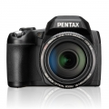
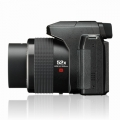
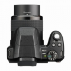
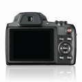
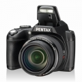

器材库 > 不可换镜头数码相机 > XG-1

规格总览
发布日期
2014-07-15
影像规格
影像传感器
CMOS
影像传感器尺寸
1/2.3英寸
有效像素
1600万
静态图像尺寸
（4:3）4608×3456, 3648×2736, 2592×1944, 2048×1536, 640×480（3:2）4608×3072（16:9）4608×2592, 1920×1080
画幅比
3:2, 4:3, 16:9
短片尺寸
1920×1080(30fps), 1280×720(60/30fps), 640×480(30fps),高速：640×480(120fps)
防抖系统
静态：感光元件位移式防抖系统；影片：电子防抖
镜头和对焦
镜头结构
15片/13组
非球面镜片
6片
焦距
4.3mm-223.6mm
等效35mm画幅焦距
24mm-1248mm
最大光圈
f/2.8-5.6
光学变焦
52倍
数码变焦
约4倍
最近对焦距离
60cm, 微距1cm
对焦模式
单点自动对焦，多点自动对焦，对象追踪, 脸部检测自动对焦，连续自动对焦
曝光控制
测光模式
中央重点测光, 点测光, 面部检测AE, AiAE
快门速度
4 秒- 1/2000秒，最长30秒（手动模式）
曝光补偿
±2EV以1/3EV级调整
ISO感光度
100, 200, 400, 800, 1600, 3200, 自动
白平衡
白炽灯, 色温调节, 阴天, 荧光灯, 自动, 手动白平衡, 晴天
自拍
10秒, 2秒, 笑脸
拍摄模式
自动模式、AE程序、快门优先级、光圈优先、手动模式、脸部美肤、手持夜景、场景模式[宠物模式、日落、烟火、多重曝光、运动、夜景人像、风景、人像、雪景、儿童、聚会]录影模式、用户自定义、HDR
闪光灯
内置闪光灯
弹出式
闪光模式
自动, 慢速同步, 减轻/消除红眼, 强制闪光, 关闭
闪光涵盖范围
广角:约 0.5 - 6.0米 (ISO 800)，远摄:约 1.2 - 3.7米(ISO 800)
取景规格
取景器
电子取景器
取景器像素
约20万
LCD尺寸
3.0英寸
LCD像素
约46万
文件输入/输出
内置存储容量
约 15.4MB
存储卡
SD/SDHC, Eye-Fi
数据接口
USB2.0
视频/音频接口
AV 输出, HDMI 输出
电源
电池
充电式锂离子电池 LB-060
续航能力
静态：约 240 张，回放：约 200 分钟
外观
颜色
黑色
尺寸
119×89×97.5mm
重量
（仅机身）约539g /（包括电池和SD卡）约567g
该产品暂无存档的网友点评
产品图 / 样片
PENTAX XG-1

PENTAX XG-1

PENTAX XG-1

PENTAX XG-1

PENTAX XG-1
评测 / 相关文章
- 详细内容 （存档）
- 超乎想象之远-宾得XG-1测评 （存档）
- ［资讯］宾得XG-1官方样张欣赏 （存档）
相关文章
- ［试用］超乎想象之远-宾得XG-1测评 （存档）
- ［资讯］宾得XG-1官方样张欣赏 （存档）
- ［资讯］宾得正式发布XG-1相机 （存档）